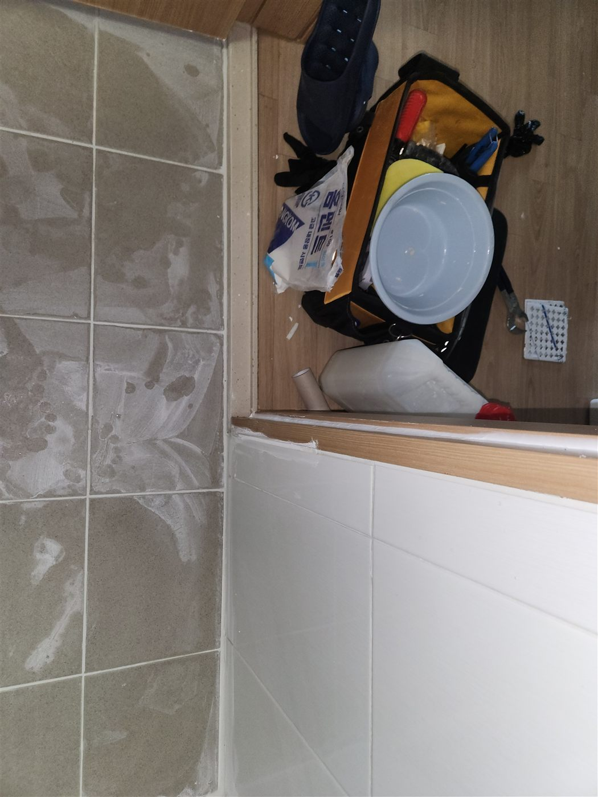
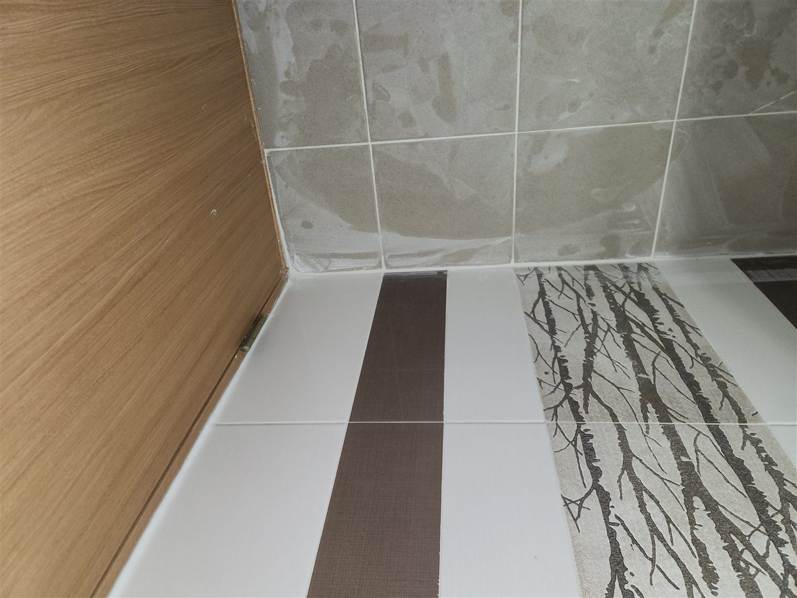
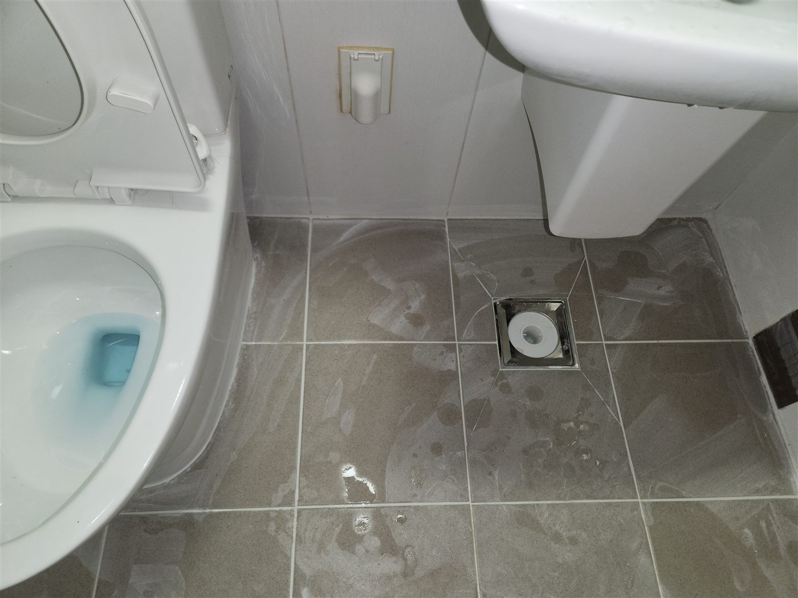
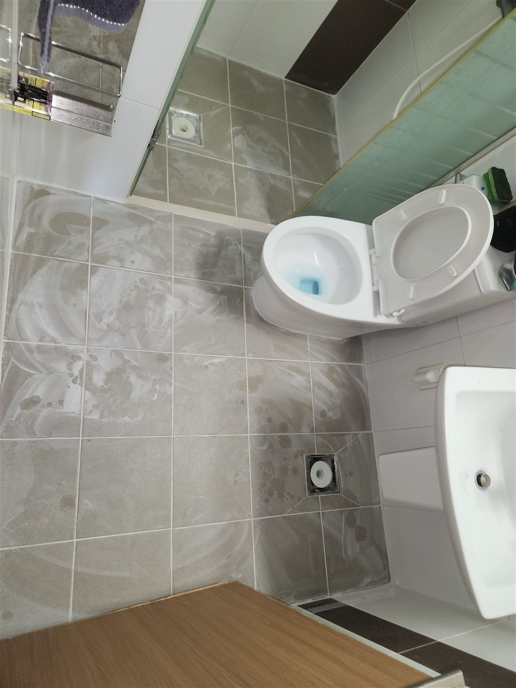
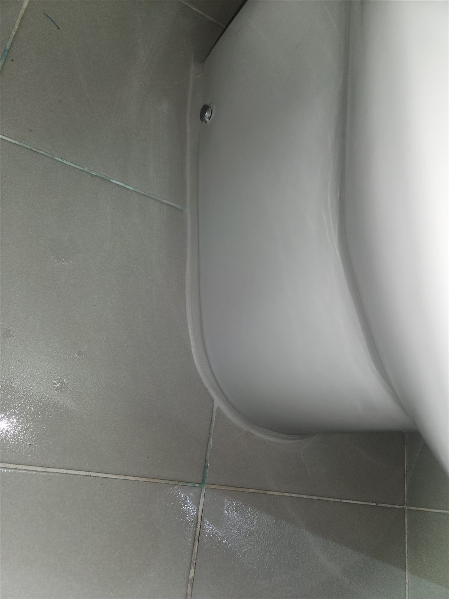
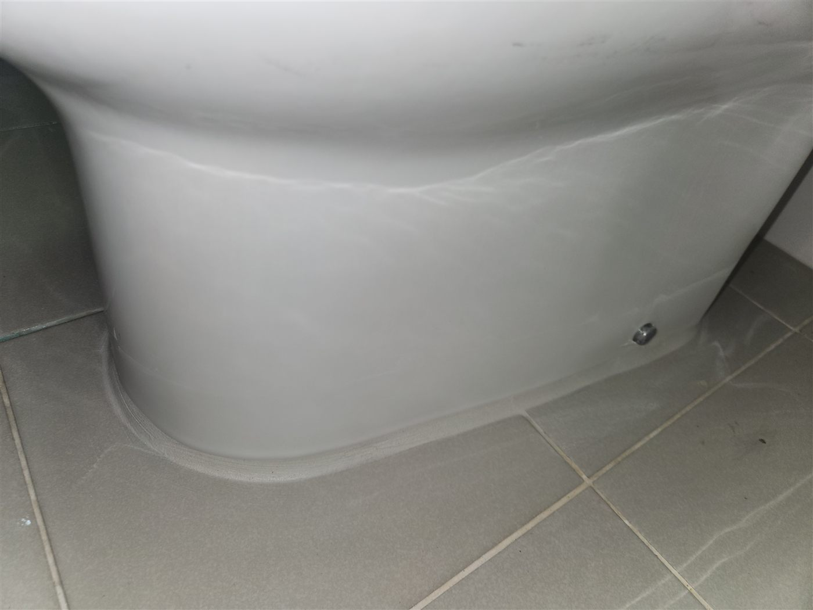
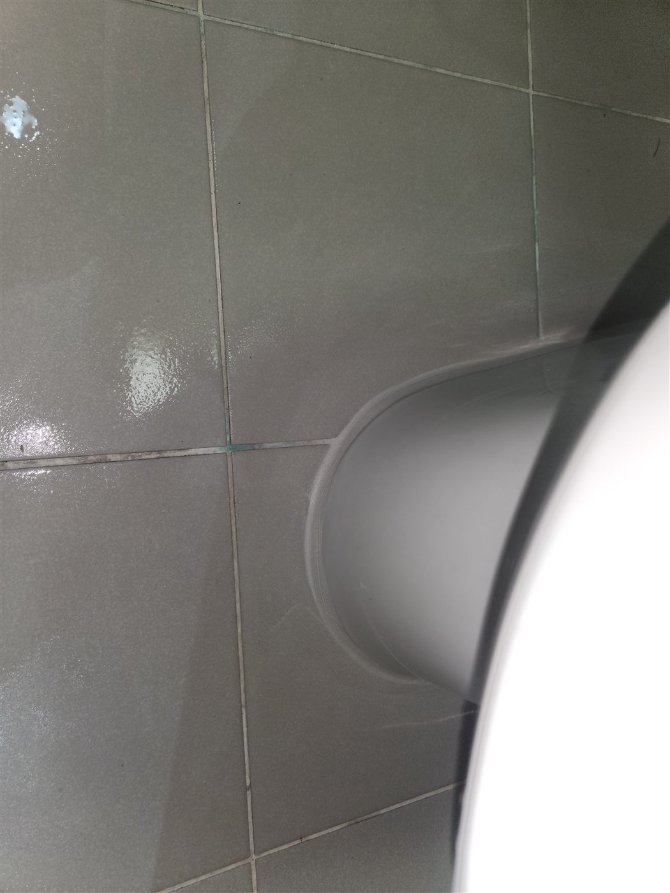

현장 상황
천안시 서북구 불당동 아파트 화장실에서 바닥과 변기 주변을 중심으로 방수·메지 시공을 진행한 현장입니다. 화장실 타일 사이 줄눈(메지)과 변기 하단 접합부는 물이 계속 닿는 자리라서, 이 부분의 마감이 약해지면 물이 틈으로 스며듭니다.

화장실 바닥과 줄눈 상태
작업 전 화장실 바닥과 벽 타일 이음부, 배수구 주변을 살펴봤습니다. 타일 자체가 멀쩡해도 줄눈이 갈라지거나 이음부가 벌어지면 그 틈으로 물이 들어갈 수 있습니다.



변기 하단 접합부 마감
변기와 바닥이 만나는 부분은 물이 가장 자주 고이는 자리입니다. 접합부를 따라 방수 성능이 있는 재료로 빈틈없이 마감했고, 마르는 과정을 지켜보며 상태를 확인했습니다.




메지가 방수에 중요한 이유
타일은 물을 거의 흡수하지 않지만 타일 사이 줄눈은 물이 스며드는 통로가 될 수 있습니다. 줄눈이 갈라지거나 검게 변하면 그 틈으로 물이 들어가 타일 뒤쪽 방수층과 벽체를 서서히 상하게 합니다. 변기 하단과 바닥이 만나는 부분도 같은 이유로 접합부 마감이 중요합니다.
마무리
화장실 줄눈이 검게 변했거나 갈라져 있다면 단순한 미관 문제가 아니라 누수의 신호일 수 있습니다. 샤워 후 벽 안쪽에서 물소리가 들리거나 줄눈 사이가 유독 축축한 경우도 점검해 볼 만합니다.
메지 시공은 겉으로 보이는 줄눈만 채우는 것이 아니라 이음부 안쪽까지 재료가 들어갔는지 확인하며 마무리합니다. 천안 불당동을 비롯한 서북구에서 화장실 줄눈이 걱정되시면 편하게 연락 주세요.
접수 안내
비슷한 증상으로 문의하실 곳을 찾고 계신다면 전화로 접수해 주세요. 접수 건은 확인 후 신속하게 연결해 안내해 드리며, 현장 진단 후 견적에 동의하신 뒤에만 작업이 진행됩니다.